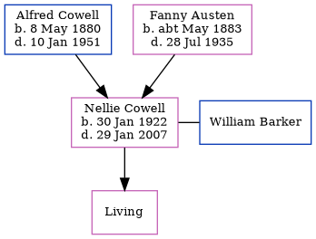

Nellie Barker (née Cowell) 1922 - 2007
[ Home ] | [ Calendar ] | [ Surnames Index ] | [ Census Index ] | [ Family History ]The child of Alfred Cowell (a transport driver) and Fanny Austen, Nellie Cowell, the first cousin once-removed on the mother's side of Nigel Horne, was born in Thanet, Kent, England on Jan 30, 19221,2,3 and. She married William Barker (with whom she had 1 surviving child, Ellen) in Thanet around May 19454.
She died on Jan 29, 2007 in Ramsgate, Kent, England2,3.
Parents
- Alfred John was born on May 8, 1880
- Fanny was born c. May 1883
Citations
- England & Wales, Birth Index: 1916-2005 Online publication - Provo, UT, USA: The Generations Network, Inc., 2008.Original data - General Register Office. England and Wales Civil Registration Indexes. London, England: General Register Office. © Crown copyright. Published by permission of the Cont
- England and Wales, Death Index, 2007-2013 Ancestry.com Operations, Inc.
- United Kingdom Deaths 2007-2017 - Findmypast
- England & Wales marriages 1837-2008 - Findmypast
Media
England & Wales marriages 1837-2008 - BMD/M/1945/2/AZ/000297/140
England & Wales births 1837-2006 - BMD/B/1922/1/AZ/000307/063
United Kingdom Deaths 2007-2017 - BMD/D/MILLEN/001595637
Family Tree
Generated by ged2site. Last updated on Jun 11, 2024